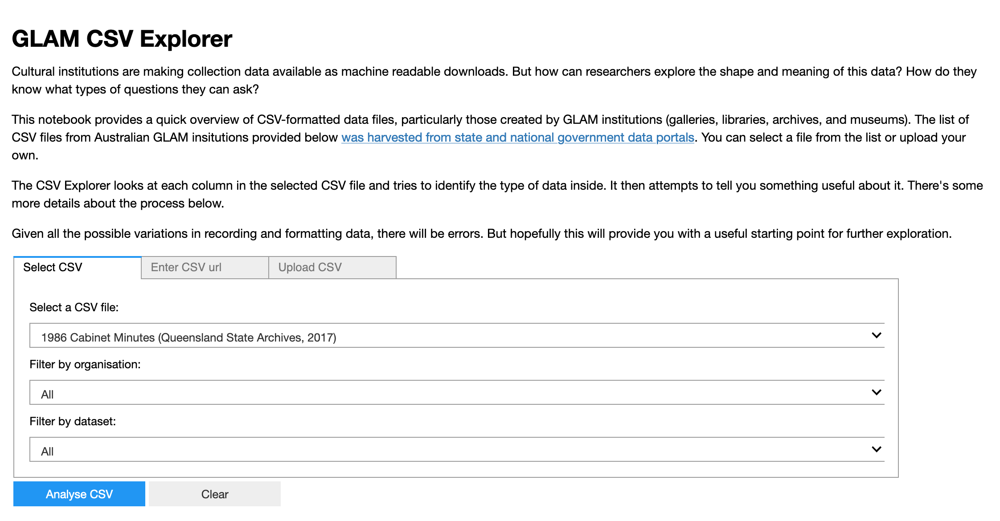
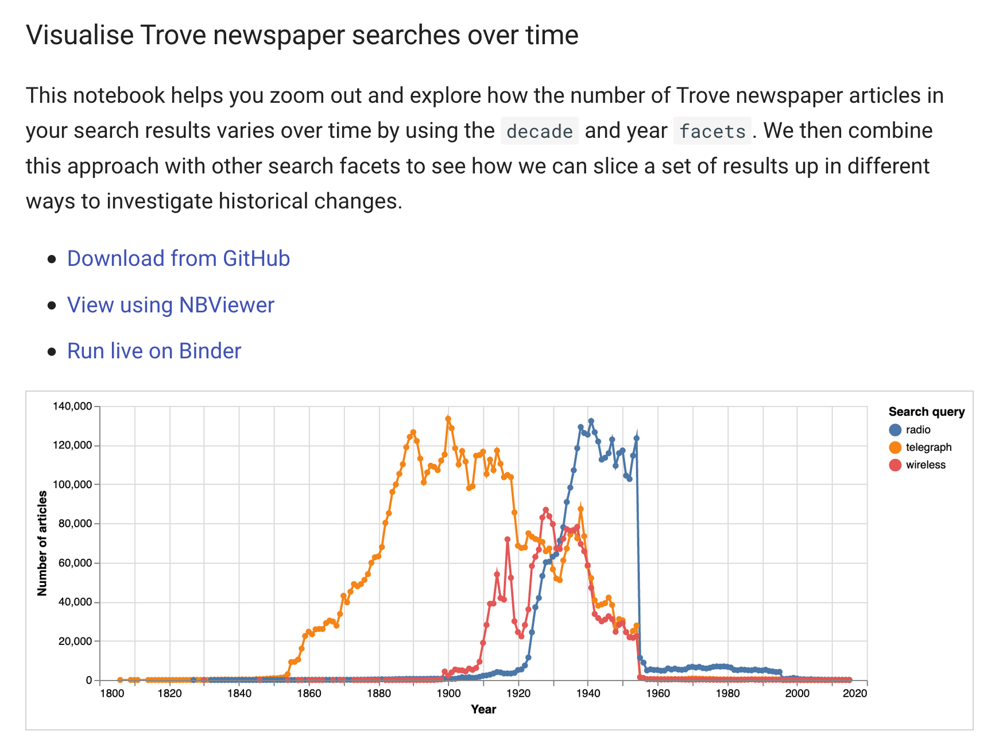

Getting started
First steps¶
Digital technologies can be intimidating. Just finding a way to get started sometimes seems too hard. If that's how you're feeling right now, here's something to try.
Click on this link to open the GLAM CSV Explorer.
You'll be taken to a site called Binder, and you'll have to wait for a bit while Binder sets things up. Just be patient, everything's ok. Once Binder's finished its work you'll see a screen like this.

Try selecting something in the 'Select a CSV file' dropdown list. These are data files shared by GLAM organisations around Australia. The app will try to load the file and do some analysis of its contents. For each column in the data file, the app will look at the range of values to try and determine whether they're dates, categories, text, or numbers. Based on this assessment it'll build some visualisations of the content. It's a quick way to gain some understanding of what's inside the file, and why it might be interesting.
It's possible that the app won't be able to download or open the data file. Don't worry, it's not your fault! When you're working with live data, you can sometimes strike problems – the file might have been moved, or formatted in a strange way. Just select a different file.
Hopefully you'll come across something of interest. You might also be wondering how this all works. The GLAM CSV Explorer is actually a Jupyter notebook. Jupyter notebooks are really just convenient ways of sharing bits of code. This code can be run, used, and edited on a variety of different platforms, and presented in a variety of different forms. In this case, the GLAM CSV Explorer notebook is being presented as an app, with all the code hidden from view.
The GLAM Workbench is basically a big collection of Jupyter notebooks that help you explore data from libraries, archives, museums, and a range of other data sources. Here are some other notebooks that you can run as apps (click on the links to open them using Binder):
- QueryPic – visualise searches in Trove's digitised newspapers
- Trove Newspaper Harvester – download newspaper articles in bulk
- Display changes in the text of an archived web page over time
- Create 'scissors and paste' messages from Trove newspaper articles
But that's just the beginning. To make full use of the GLAM Workbench you need to understand a bit about how Jupyter notebooks work. Once you've mastered the basics you can use any notebook on this site.
Introducing Jupyter notebooks¶
Jupyter notebooks combine text, images, and live code within a single web page. So not only can you read about GLAM collections data, you can download it, analyse it, and visualise it – all within your browser!
If you'd like to see what Jupyter notebooks can do, I've created an introductory notebook that walks you through the basic conventions and lets you play with some live data from the National Museum of Australia. This notebook is presented in the 'classic' notebook view, with all the code exposed. Don't let the code make you nervous! No programming knowledge is needed to use this notebook, or many of the other notebooks in the GLAM Workbench.
Click here to launch the Getting Started notebook.
Once again, clicking this link will transfer you to Binder, a service that loads Jupyter notebooks in the cloud. Binder will set up a customised computing environment that includes all the software you'll need to run the notebook in your browser. It can take 30 seconds or more to load everything, so be patient. Once the notebook has loaded, just follow the instructions!
Notebooks are made up up cells that can contain text or code. You can run the code cells to do things – get some data, or create a visualisation. You can also edit the code cells to enter your own information, or change the results. This slideshow provides a quick primer.
There's really only a few things you need to know to use any of the Jupyter notebooks in the GLAM Workbench. Here's all the basics!
Jupyter notebook quick tips
- Notebooks include both text cells and code cells.
- Code cells have boxes around them.
- To run a code cell click on the cell and then hit Shift+Enter. The Shift+Enter combo will also move you to the next cell, so it’s a quick way to work through the notebook.
- While a cell is running a * appears in the square brackets next to the cell. Once the cell has finished running the asterix will be replaced with a number.
- In most cases you’ll want to start from the top of notebook and work your way down running each cell in turn. Later cells might depend on the results of earlier ones.
- To edit a code cell, just click on it and type stuff. Remember to run the cell once you’ve finished editing.
For a more detailed introduction to Jupyter notebooks and why they're of use to researchers in the humanities, see this tutorial by Quinn Dombrowski, Tassie Gniady, and David Kloster in The Programming Historian.
Using the GLAM Workbench¶
The GLAM Workbench is organised around collections, rather than tools or methods. The aim is to get you working with real data related to your research as soon as possible. This is reflected in the site navigation, which is divided up into sectors and institutions, with a few extra headings for aggregated collections like Trove and DigitalNZ. Just look for something that interests you and dive in.
Here's a quick guide to help you find your way around.
Each section within the GLAM Workbench includes a list of Jupyter notebooks that work with data from that collection. There may also be links to some pre-harvested datasets. The notebooks take a variety of different approaches and forms. Some help you create your own datasets for further analysis. Some are focused on ways of visualising collections. Some are quick hacks to help you workaround the limitations of collection interfaces. And some are detailed tutorials that walk you though the possibilities of the available data. As noted above, some notebooks run as standalone apps, while others expose all their workings.
There's no one pathway through the GLAM Workbench. You can pick and choose based on your interests, needs, and skills.
Underneath the descriptions of most notebooks you'll find a series of links. All the links take you to a copy of the notebook, but what you can do with the notebook varies according to the environment in which it's loaded. A typical set of links might include:
- Download from GitHub
- View on NBViewer
- Run live on Binder
The links to GitHub and NBViewer take you to static versions of the notebook that you can read and download, but you can't run any of the code. The link to Binder loads a live version in a customised computing environment. More details of each of these are included below.
Download from GitHub¶
Each section of the GLAM Workbench has its own GitHub repository where the notebooks and any related data files are stored. If you have Jupyter set up on your own computer and you want to play around with one of the notebooks, then you probably want to download it from GitHub and run it locally. GitHub also shows you the history of a notebook – so you can check if anything has changed.
When you open a Jupyter notebook in GitHub, it tries to display a nicely formatted static version. But it doesn't always work, and the formatting can be a bit off. If all you want to do is view the contents of a notebook, then you're probably better off using NBViewer.
View on NBViewer¶
NBViewer displays a nicely formatted copy of a Jupyter notebook. It's the quickest and most reliable way of examining the content of a notebook. However, this is a static view. The interactive Jupyter notebook has been turned into an HTML file. You can't run code cells or edit the contents of the notebook. You can look, but you can't do. If you want to try running the code in a Jupyter notebook (and that's what they're for), then you might want to give Binder a try.
Run live on Binder¶
Binder, as mentioned above, is a cloud-based service for running Jupyter notebooks. When you click on the link, Binder opens the notebook within a customised computing environment with all the software you'll need ready to go. This can take a little while — just be patient. Once Binder is ready, you'll be able to use the notebook live within your web browser. However, if you make any changes or harvest any data, Binder won't save them for you. You'll have to make sure you download any files you want to keep. In many cases the notebooks themselves will generate download links to make it easy for you to save your results. Binder sessions will also stop responding after after a period of inactivity — just start a new session.
Running notebooks as apps¶
You might also come across links that open notebooks using Appmode or Voilà. These are live versions that hide the notebook's code and run all the cells automatically. This means you can make a notebook available with a nice clean interface for those who might be a little intimidated by a page full of code.
These different links provide another set of pathways for you to follow based on your needs and skills. Let's say you're exploring the Trove newspapers section of the GLAM Workbench and notice the visualise Trove newspaper searches over time notebook.

You might first click on the NBViewer link to browse the contents of the notebook. If you decide it looks interesting and want to try running some of the examples live you could click on the Binder link. After a while you might decide you want to create your own customised version of this notebook. You could then use the GitHub link to download the source code.
More ways to run notebooks¶
The links to Binder help you get up and running quickly. One click and you're working live with a Jupyter notebook. I often use the Binder links to run notebooks, even though I have all the code on my own machine – it's just so easy. But Binder has limits. If you're doing sustained work using one of the repositories in the GLAM Workbench, you might want to create a persistent environment that saves what you do, as you do it. There are a number of ways of setting that up. They're listed here from easiest to most complicated (ie requiring more technical knowledge).
Using Reclaim Cloud¶
Reclaim Cloud is a paid hosting service, aimed particularly at supporting digital scholarship in hte humanities. Unlike Binder, the environments you create on Reclaim Cloud will save your data – even if you switch them off! To run this repository on Reclaim Cloud for the first time:
- Create a Reclaim Cloud account and log in.
- Click on the button above to start the installation process.
- A dialogue box will ask you to set a password, this is used to limit access to your Jupyter installation.
- Sit back and wait for the installation to complete!
- Once the installation is finished click on the 'Open in Browser' button of your newly created environment (note that you might need to wait a few minutes before everything is ready).
There's more information on the Using Reclaim Cloud page.
Using Docker¶
The GLAM Workbench repositories are stored as pre-built 'Images' on Docker Hub. To download and run one of these images for the first time, you need to:
- Install Docker Desktop.
- Create a new directory to contain your local files, and open it from the command line. This directory will be named
workin the Jupyter interface. - From the command line, run the following command, replacing
[REPOSITORY NAME]with the name of a GLAM Workbench repository, for example, 'trove-newspapers':
docker run -p 8888:8888 --name [REPOSITORY NAME] -v "$PWD":/home/jovyan/work glamworkbench/[REPOSITORY NAME] repo2docker-entrypoint jupyter lab --ip 0.0.0.0 --NotebookApp.token='' --LabApp.default_url='/lab/tree/index.md' - It will take a while to download and configure the Docker image. Once it's ready you'll see a message saying that Jupyter Notebook is running.
- Point your web browser to
http://127.0.0.1:8888 - To stop the container hit Ctrl+C
There's more information on the Using Docker page.
Using Python on your own computer¶
It's best to keep your GLAM Workbench repositories in separate virtual environments. This means you can install the software versions that you need without upsetting anything else. For example, if you wanted to set up your own version of the Trove newspapers repository, you'd start by creating a new virtual environment.
python3 -m venv trove-newspapers
cd trove-newspapers
source bin/activate
You can then clone the GitHub repository into your virtual environment.
git clone https://github.com/GLAM-Workbench/trove-newspapers.git
Finding the clone url
To get the url you need to clone one of the GLAM Workbench's GitHub repositories, just do the following:
- Go to the section of the GLAM Workbench you want to clone.
- Click on the repository link in the top menu bar (look for the Octocat! )
- Click on the green Clone or download button and copy the link.
Each repository in the GLAM Workbench contains a requirements.txt file that lists all of the Python packages needed to run the notebooks. Use cd to move into the cloned folder and then use pip to install everything you need.
cd trove-newspapers
pip install -r requirements.txt